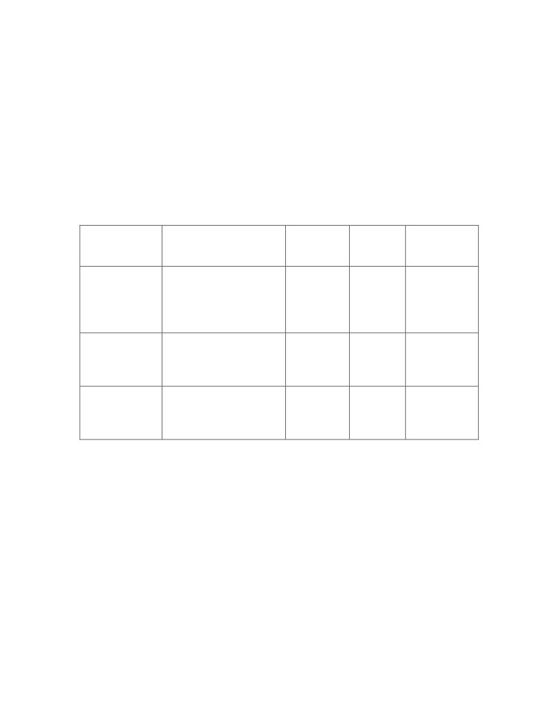

RESUME
AJITHA SHENOY .K.B,
PhD student (Computer Science),
Room No. CS 106
Department of Computer Science,
IIT, KANPUR,
UP, INDIA.
E-mail : ajithshenoy2003@yahoo.com or
ajith@cse.iitk.ac.in or ajith@iitk.ac.in
Mobile : 91- 9305326504, 91 - 9839791934 (R)
Career Objective: To pursue a challenging career and be part of a progressive
organization that gives scope to enhance my knowledge, skills and to reach the pinnacle
in the computing and research field with sheer determination, dedication and hard work.
Work Experience:
Pursuing research in the Department of Computer Science and Engineering
at IIT, Kanpur.
Worked as a Lecturer in the Department of Information & Communication
Technology at Manipal Institute of Technology, MANIPAL from 04-09-2003 to
19-12-2007 ( 4 years 3 months).
1.5 years of work experience as a Lecturer in the Department of Mathematics at
Government College, Kasaragod - 671 121.
Projects & Work Done:
1. M.Tech Project:
“TCP SWITCHING”
Technology Used: C, Linux
Responsibility: My responsibilities were to code and to document.
Project Description: Using circuit switching technology in packet
switched network to speed up the transmission process. Built a
Linux kernel module for easy integration of the solution to the
enterprise environment.
2. Worked as a team member in PHILIPS BOP project (TELE MEDICINE project in
rural area).
Responsibility: Conducted survey in rural areas and primary health care centers
to understand the feasibility and demand for the TELE MEDICINE project.
Based on the statistics draw graphs and analyze the survey results. Also they
involved me in Idea Evaluation to check whether the Ideas given by the people
are new and patentable.
Got Appreciation Certificate from Philips, India
Page 1 of 3

3. Guided several B.E, MCA projects.
4. Taken Online VSAT classes for Sikkim Manipal University.
5. Taken Classes for BE (IT), MCA and M.Tech (Software Engineering) at
Manipal Institute of Technology (MIT), Manipal, Karnataka State.
6. Taken Classes for B.Sc (Mathematics), M.Sc(Mathematics) at Govt. College,
Kasaragod, Kerala State.
Academic Profile:
Pursuing P.hD in the Department of Computer Science and Engineering, IIT,
Kanpur. Completed 1.5 years with CPI of 9 out of 10
GATE - 2000 Qualified (All India 156th Rank)
University/Board
Year
% Marks
Class
Examination
Obtained
Passed
B.Sc
Calicut University
1997
89.8
First
with
(Mathematics)
Distinction
(First in the
Class)
M.Sc
First
with
(Mathematics)
Kannur University
1999
76.27
Distinction
(First in the
Class)
M.Tech
(Computer and
CGPA
First
with
Information
Cochin University
2003
8.11 out
Distinction
Science)
10
Technical Skills:
Programming languages
: C, C++, MFC, VC++, VB.Net, JAVA
Back end
: ORACLE 9i
Operating System
: Windows, Linux
Tools
: VMware
Field of interest
: Algorithms, Graph Algorithms, Randomized Algorithms, Bio-
informatics, Data Structures, Object Oriented Technology, Computational Geometry,
and Mathematics.
Page 2 of 3
Subject Taught :
Design and Analysis of Algorithm, Object Oriented Programming Using C++, Visual
Programming (VC++), System Simulation and Modeling, Multimedia Communication,
Advanced Computer Networks, Mathematics.
Extra Co curricular Activities :
1. Attended 19th Jyvaskyla summer school on Evolutionary Algorithms conducted by
University of Jyvaskyla, Finland (from 17-21st August 2009 )
2. Attended two days workshop on "Server Virtualization Technology" Conducted by
Computer Science Department MIT, Manipal. Lectures and hands on experience class
taken by Software Engineers from Vmware.
3. Attended training in Microsoft .NET organized by Manipal Universal learning &
Department of Computer Science Engineering, MIT, Manipal. Training given by
Indicom software & Services.
4. Attended workshops conducted by Dept. of Bio Medical Engg and Dept. of
Information and communication Technology, Manipal Institute of Technology,
Manipal.
5. Finance coordinator for International Conference conducted by Dept. of Information
and Communication Technology, Manipal Institute of Technology, Manipal.
6. Department representative for MAHE website development committee.
Personal Profile:
Name:
AJITHA SHENOY .K.B
Gender:
Male
Date of birth:
28-05-1977
Marital status:
Single
Nationality:
Indian
Father’s Name:
Late. Sri. K.B. Narayana Shenoy
Linguistic Ability:
English, Hindi, Kannada, Malayalam, Konkani, Tulu
Passport Number:
F7190229
Present Address:
B5, SBRA
Indian Institute of Technology,
KANPUR - 208016.
Personal Strength:
Leadership skills, Self-confidence, Optimism and Hard working.
Declaration: I hereby declare that all the details furnished above are true to the best of
my knowledge and belief.
AJITHA SHENOY .K.B
Page 3 of 3